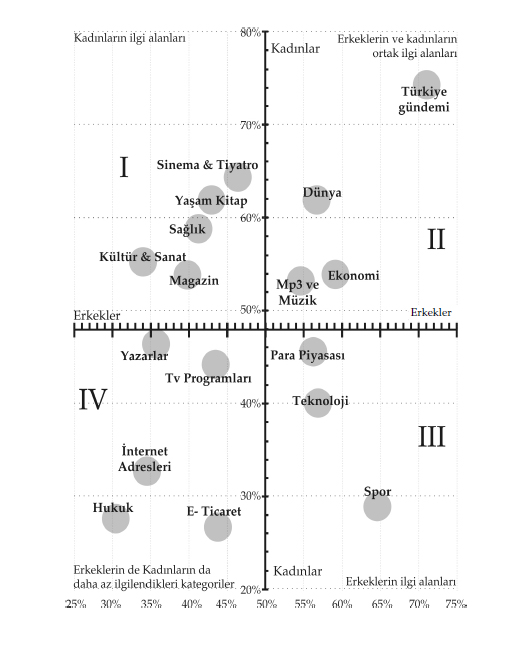

“Bir insan birçok kez başarısızlığa uğrayabilir ama başkalarını suçlamaya başlamadığı sürece başarısız bir insan değildir.”
Anonim
Sunacağınız ürünlere veya hizmetlere pazarlama faaliyetleri planlamak, firmanın piyasaya nasıl giriş yapacağını ve müşterileri nasıl bulacağınızı planlama faaliyetidir. En iyi iş modelleri bile pazarlama stratejisi eksik olursa başarısız olabilir. Hedef kitlenizi doğru belirledikten sonra onları sitenize çekmek için bir çok farklı yöntemler uygulayabilirsiniz. Sitelere reklam verebilirsiniz, işbirliği modellerini kullanarak siteniz üzerinde satışla sonuçlanan referans sitelere komisyon verebilirsiniz, müşterilerinizin sitenizi tavsiye etmesini sağlayabilirsiniz. İnternet üzerindeki sohbet odalarını, forumları ve e-posta gruplarını sitenizi tanıtmak için kullanabilirsiniz. İçeriğinizi başka sitelerle paylaşabilirsiniz. Arama motorlarındaki doğal arama sonuçlarında üst sıralarda gözükmek için arama optimizasyonu yapabilirsiniz. Bunlardan başka bir çok yöntem kullanılabilir. Ancak internet üzerinde potansiyel müşterileriniz nelere ilgi duyuyorlar? Onları nasıl ve nerede bulacaksınız? Bize bu konuda, elimizdeki kişiselleştirme verisi yardımcı olacak.
Türkiye’deki internet kullanıcılarıyla yapılmış ve yakın bir zamanda Fransa’da Sorbonne Üniversite’sinde Yüksek Lisans tezi12 olarak sunulmuş araştırma bize çok ilginç sonuçlar ortaya koyuyor. Kişiselleştirme ve demografik özelliklerini kıyaslayan bu çalışma erkekler ile kadınların kişiselleştirme haritasının yanı sıra; eğitim, medeni durum, yaş gibi diğer değişkenleri de kişiselleştirmeyi etkileyen faktörler olarak inceliyor. Şimdi hedef kitlemizi nasıl seçeceğiz? Hangi siteler nasıl bir demografiye sahip aşağıda yer alan haritadan okumak mümkün olacak. (Grafik-3)
Bu haritayı modelinizde nasıl kullanabiliriz?
Birincisi demografik özelliklere göre kişilerin eğilimlerini görmek mümkün. Eğer sağlıkla ilgili bir modeliniz varsa emin olabilirsiniz ki hedef kitleniz arasında kadınlar belki daha çok yer alacak. Yaşlara göre ilgi alanlarını inceleyerek kimlere neler satabileceğimizi, kimlerin elektronik ticaret yaptıklarını da inceleyebiliriz.
Harita iki eksenden oluşuyor. Yatay eksen erkekleri, dikey eksen kadınların seçtikleri kategorilerin yüzdesini gösteriyor. Yatay eksen ve dikey eksen birbirlerini ortalama noktalarında kesiyor. Erkeklerin toplam 18 kategoriden % 48’ni kişiselleştirdikleri, kadınların ise % 50’sini kişiselleştirdikleri görülüyor. Diğer bir ifadeyle, kendilerine seçmeleri için sunulan 18 kategoriden ortalama olarak kadınlar 9, erkekler 8,5 kategoriyi kişiselleştiriyorlar.

Grafik 3: Kadın ve erkeklerin seçtikleri kategori haritası
Grafik toplam 4 bölgeden oluşuyor. I’nci bölge sol üst köşede yer alıyor. Bu bölge kadınların erkeklerden farklı olarak kişiselleştirdikleri kategorileri gösteriyor. Yani kadınların ilgilerinin erkeklerden daha fazla olduğu bir bölge. Kadınları erkeklerden ayıran kategoriler burada yer alıyor. III’ncü bölge ise bu anlatılanların tam tersi olarak erkeklerin kadınlardan farklı olarak seçtikleri kategorileri bizlere gösteriyor. Geriye kalan II ve IV. kısım erkek ve kadınların ortak bölgelerini gösteriyor. II’nci bölge kadın ve erkeklerin ortak olarak ilgilendikleri kategorileri, IV’ncü bölge ise ortak olarak daha az ilgi çeken kategorileri grafik üzerinde gösteriyor.
Kadınların erkeklerden farklı olarak kişiselleştirdikleri kategorileri haritadan inceleyelim. Unutmadan bu kategoriler her iki cinsiyetin de kendilerine kategori seçme fırsatı verildiğinde seçtikleri kategorileri gösteriyor. Araştırma, seçtikleri kategorilerin ne kadar okunduğunu ise bir sonraki aşamada inceliyor. Kadınlar erkeklerden farklı olarak Sinema & Tiyatro, Kitap, Yaşam, Sağlık, Magazin, Kültür & Sanat kategorilerini kişiselleştiriyorlar. Erkekler ise kadınlardan farklı olarak 3 kategoriyi seçiyor. Para Piyasası, Teknoloji ve Spor. Spor kategorisi diğerlerinden farklı olarak uçta yer alarak açık bir farklılık sergiliyor. II. bölgeyi, ortak olarak ortalamaların üzerinde olan kategorileri inceleyecek olursak; Türkiye gündemi, her iki cinsiyetin de açık ara en fazla kişiselleştirilen bölüm oluyor. Dünya, ekonomi, mp3 ve müzik kategorisi de diğer ortak kategoriler. IV. bölgede yer alan yazarlar, televizyon programları, internet adresleri, elektronik ticaret ve hukuk kategorileri kadınların ve erkeklerin daha az seçtikleri olarak karşımıza çıkıyor. Elektronik ticaret kategorisinin erkeklerin % 44’ü, kadınların % 27’si ile en az seçilen bir kategori olması ilgi çeken diğer bir nokta.
Pazar stratejesini nasıl gerçekleştireceklerini düşünen Burak ve Serkan, gelecek seneler içinde müşterilere ulaşmak üzere tüm pazar stratejilerini kullanacak da olsa başlangıçta gerilla pazarlama yöntemleriyle internet üzerindeki forumlara, sohbet odalarına girer ve müşteri çekmeye çalışırlar. Çünkü yaratıcı Pazar stratejilerinin maliyeti yoktur, bir siteye reklam vermenin maliyeti ise ilk başta karşılamayacak kadar çoktur. Gittigidiyor’un arkasında sadece ikisi vardır. Burak ve Serkan tüm her şeyi yönetmektedirler. Ne programcı ne de bir başkası vardır. Çekirdek kadro iş başındadır. Hiç kimse daha bir ürün listelememiştir. O kadar uğraşma, emek çaba aylar boyu fikir fırtınaları, şimdi uygulama aşamasındadır. Cesaretlerini yitirmemişlerdir.
Bir akşam Burak, ofisten daha erken çıkar. Serkan bilgisayar başında sitelerini kontrol etmektedir. Bolu’dan bir müşteri tam 250 bin TL, bugünün parası ile 25 kuruş vererek bir ürününü sitede listelemiştir. İşte büyük an, o andır. İlk siparişlerini almışlardır. LiderGS takma ismi olan bu müşteri bugüne kadar hiçbir zaman ilk müşterileri olduğunu bilmeyecektir. Serkan, hemen Burak’ı telefon ile arar, mutlu haberi verir. Eğer insanlar hiç tanımadıkları ARK bilgi işlem şirketine bu sitede ürünlerinin listelenmesi için para gönderiyorlarsa inandıkları iş, er geç olacaktır. Bu ilk sipariş onları cesaretlendirir.
LiderGS onlar için ilk kıvılcımı yakan kişi de olsa hiçbir zaman, kurumsal müşteriler hariç, diğerleriyle şahsi ilişki kurmamışlar. Birebir ilişkinin daha sonra ayrıcalıklı bir durum istemeye kadar gittiğini bildikleri için bunu şirket prensibi haline getirmişler. Kurumsal müşteriler ise karşılıklı görüşerek belli anlaşmalar yapmışlar.
Pazarlama stratejilerini site geliştikçe daha da belirgin hale getirmeye başlarlar. Müşterilerin kendileri için ne kadar önemli olduğunu anlayarak sadık müşteriler yaratmaya enerjilerini harcarlar. Bunun yanı sıra ‘gittigidiyor’ büyümeye başladıkça diğer sitelerle işbirlikleri yaparlar. Bunun yanı sıra birden kendi kendine gelen işbirlikleri de olur. İşbirliği stratejisinin önemli olduğunu anlayan ortaklar, siteleri üzerinden kendilerine alışverişi yönlendiren sistemlerini 2002 yazında kurarlar. Bu sistem satışlarının birden artmasına sebep olacaktır.
İlk ay toplam 200 YTL’lik ürün bedeli listelemesi gerçekleştirirler. 10-15 kişi sitelerinde bu faaliyeti gerçekleştirmektedir. Bu sırada çok az da olsa mimarlık faaliyetlerini de sürdürmektedirler. 2001 Mart’ında çok para harcarlar ve nerdeyse hiç para kazanamazlar. Sunucuları Doruk Net’te durmaktadır. Epey yüklüce bir kira vermektedirler. Bunun yanı sıra ofisleri Suadiye’de Vakkorama’nın arkasında, 100 m2’lik bir dairedir. Mimar oldukları için daireyi kendileri dekore ederler.
25 Mart 2001 Pazar sabahı kaltıklarında, Sabah gazetesinde gittigidiyor hakkında tam sayfalık bir haber olduğunu görürler; bu, onları çok sevindirir. Bu sırada bu haberin etkisine dayanamayan site, ziyaretçileri karşılayamamış, çökmüştür. Serkan’ın eşinin yakın arkadaşı bu haberin hazırlanmasında ve yayınlanmasında yardımcı olmuştur. Sabah gazetesinin Pazar ekindeki haberin resimlerinde yok yoktur; yatlar, arabalar ve akla neler geliyorsa internet üzerinde açık arttırmayla satılabileceği ve uygun fiyatlardan alınabileceği haberde yazılmaktadır. Sitenin çökmesine rağmen bu haber insanların artık yavaş yavaş sitelerine uğramasını sağlar. Bu haber, motivasyonlarını arttırır ve başarılı olacaklarına inançları daha da arttırır.
İnternette yeniyseniz büyük sitelerle anlaşma yapmanız oldukça zor olacaktır. İlk olarak tanınmanız ve sitenize trafik çekmeniz gerekmektedir. Bunu başardıktan sonra diğer yüksek trafikli sitelerle anlaşma yapabilmeniz daha kolay olacaktır. Başlangıçta sitenizin güvenirliğini sarsmadan kendinizden daha fazla trafik aldığınızı gördüğünüz ciddi sitelerle anlaşma yapmaya çalışmanız en doğru yol olacaktır. Bu durumda kişisel ilişkilerinizi kullanmanız gerekebilir; bunun yanı sıra, diğer site sahipleriyle birebir de tanışabilir ve onlara fikirlerinizi açıkça anlatabilirsiniz. Bu süreç zorlu bir maraton gibidir. Dantel gibi ince ince işlemeniz gerekmektedir.
İlk müşterilerinizin memnun olması çok önemlidir. Onlar sizin satıcılarınız olarak, sizin yerinize çalışacaklardır. Müşteri memnuniyeti sağlamak için çok hızlı cevaplar vermelisiniz. Tek başına hız yeterli olmaz, sorunlarını çözmelisiniz. Sitenizden elde edecekleri katma değerleri arttırmaya çaba göstermeniz gerekiyor. Başta bu 3 kişi için de olsa tüm enerjinizi ortaya koymanız gerekiyor. Size gelmiş öncü müşteriler size gelecek diğerlerinin ya kapısını açacak ya da kapatacaklardır. Bu bakımdan ilk müşterilere sayısal değer olarak kesinlikle bakmayın.
yemeksepeti.com ilk açıldığı Ocak 2001’de çok az bir restoran ve sipariş sayısıyla hizmete başlar. Satışlarını artırmak için diğer sitelerle işbirliği anlaşmaları yapmaya başlarlar. Fikrin yaratıcı bir yönünün bulunması ve internet üzerinde sürekli büyümeleri sonunda, ilk büyük anlaşmalarını iyi bir internet içeriğine sahip porttakal.com ile yaparlar. Siteleri başlangıç aşamasında olsa da kendilerini çok iyi ifade edip karşı tarafın güvenini sağlamışlardır. Şubat ayında yaptıkları bu işbirliğini daha sonra Ağustos 2001’de önde gelen internet servis sağlayıcısı Vestelnet takip edecektir. Nisan 2001’de faksı olmayan restoranlara faks koymak üzere reklam karşılığı Türkiye “Panasonic” ile anlaşırlar. Böylece 50 restorana Panasonic faks aletlerini koyarlar. Pazar stratejileriyle büyümenin yolunu açmaya başlarlar.